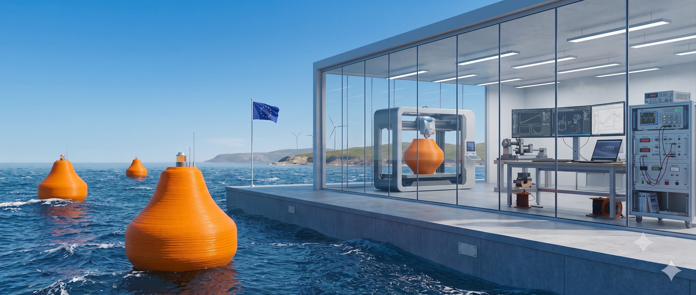

<!DOCTYPE html>
<html lang="en">
<head>
  <meta charset="utf-8">
  <meta name="viewport" content="width=device-width, initial-scale=1.0">
  <title>Beyond the Grid – WEC‑Pro</title>

  <!-- Tailwind CSS required for nav.js styling -->
  <script src="https://cdn.tailwindcss.com"></script>
  <script>
    tailwind.config = {
      theme: {
        extend: { colors: { primary: { 600: "#003399", 700: "#003399" } } },
      },
    };
  </script>

  <style>
    /* Base Reset & Typography */
    body {
      font-family: 'Segoe UI', Tahoma, Geneva, Verdana, sans-serif;
      background-color: #f4f4f9;
      color: #333;
      margin: 0;
      padding: 0;
      line-height: 1.6;
    }

    /* Slight blur under sticky header */
    .header-blur { 
      background: rgba(255,255,255,0.9); 
      backdrop-filter: saturate(120%) blur(6px); 
    }

    /* Main Container */
    .container {
      max-width: 800px;
      margin: 40px auto;
      padding: 40px;
      background-color: #fff;
      box-shadow: 0 4px 20px rgba(0,0,0,0.08);
      border-radius: 12px;
    }

    /* Headings — Scoped to .container to override Tailwind Preflight reset */
    .container h1 {
      font-size: 2.2em;
      font-weight: 700;
      color: #0f172a;
      margin-bottom: 10px;
      text-align: center;
      letter-spacing: -0.5px;
      line-height: 1.25;
    }
    .container .byline {
      text-align: center;
      color: #64748b;
      font-style: italic;
      margin-bottom: 40px;
      font-size: 0.95em;
    }
    .container h2 {
      color: #1e293b;
      font-size: 1.5em;
      font-weight: 700;
      margin-top: 40px;
      margin-bottom: 20px;
      border-bottom: 2px solid #e2e8f0;
      padding-bottom: 10px;
      line-height: 1.35;
    }
    .container h3 {
      color: #334155;
      font-size: 1.25em;
      font-weight: 600;
      margin-top: 30px;
      margin-bottom: 10px;
      line-height: 1.4;
    }

    /* Content Styling */
    .container p {
      font-size: 1.05em;
      margin-bottom: 20px;
      color: #374151;
    }
    .container ol {
      list-style-type: decimal;
      margin-bottom: 20px;
      padding-left: 25px;
    }
    .container ul {
      list-style-type: disc;
      margin-bottom: 20px;
      padding-left: 25px;
    }
    .container ol li,
    .container ul li {
      display: list-item;
      margin-bottom: 10px;
      color: #374151;
    }
    .container strong {
      color: #0f172a;
      font-weight: 700;
    }

    /* Special Sections */
    .container .intro-text {
      font-size: 1.15em;
      color: #1e293b;
      border-left: 4px solid #2563eb;
      padding-left: 20px;
      margin-bottom: 30px;
    }

    /* Data Snapshot Box */
    .container .data-box {
      background-color: #f0f9ff;
      border: 1px solid #bae6fd;
      border-radius: 8px;
      padding: 25px;
      margin-top: 40px;
    }
    .container .data-box h3 {
      margin-top: 0;
      color: #0369a1;
      font-size: 1.2em;
      font-weight: 700;
      text-transform: uppercase;
      letter-spacing: 0.5px;
    }
    .container .data-box ul {
      list-style-type: none;
      padding: 0;
      margin: 0;
    }
    .container .data-box li {
      padding: 10px 0;
      border-bottom: 1px solid #e0f2fe;
      display: flex;
      justify-content: space-between;
      flex-wrap: wrap;
    }
    .container .data-box li:last-child {
      border-bottom: none;
    }
    .container .data-label {
      font-weight: bold;
      color: #0c4a6e;
    }

    /* Footer */
    .container hr {
      border: 0;
      height: 1px;
      background: #e2e8f0;
      margin: 50px 0 30px 0;
    }
    .container .footer-text {
      font-size: 0.85em;
      color: #94a3b8;
      text-align: center;
    }

    /* Responsive */
    @media (max-width: 600px) {
      .container {
        margin: 20px 10px;
        padding: 20px;
      }
      .container h1 { font-size: 1.8em; }
      .container .data-box li { flex-direction: column; }
    }
  </style>
</head>
<body class="min-h-screen flex flex-col">

  <div id="root"></div>

  <!-- React & Babel requirements for the nav component -->
  <script crossorigin src="https://unpkg.com/react@18/umd/react.development.js"></script>
  <script crossorigin src="https://unpkg.com/react-dom@18/umd/react-dom.development.js"></script>
  <script src="https://unpkg.com/@babel/standalone/babel.min.js"></script>

  <!-- External Nav Component -->
  <script src="nav.js"></script>

  <script type="text/babel">
    function App() {
      return (
        <div className="min-h-screen flex flex-col">
          {/* Shared Header from nav.js */}
          <SiteHeader />

          {/* Main Content */}
          <main className="flex-1">
            <div className="container">
              <h1>Toward Blue, Local, and Resilient Europe's Future</h1>
              <div className="byline"></div>

              <div className="intro-text">
                For decades, the global conversation on energy was dominated by a single metric: capacity. The goal was simply to produce enough power to feed an engine of economic growth that consumed resources without looking back. Today, that narrative has to be shifted.
              </div>

              <p>We are no longer just asking <em>how much</em> energy we can produce, but <em>how</em> we produce it, <em>who</em> owns it, and whether our infrastructure can survive the volatile century ahead.</p>
              
              <p>The transition to renewable energy is no longer an optional "green" add-on; it is a prerequisite for survival and the cornerstone of Europe’s new economic and energy security.</p>

              <h2>The Double Bind: Climate Urgency and Energy Security</h2>
              <p>The context for this shift is stark. The IPCC’s AR6 Synthesis Report confirms that human-driven warming is already triggering widespread impacts. To keep the 1.5–2°C limit within reach, we need rapid, deep emission cuts. While the IEA’s World Energy Outlook 2024 offers a glimmer of hope—renewables generated 30% of global electricity in 2023, while fossil fuels dropped to a 50-year low of 60%—the reality is that fossil fuels still satisfy about 80% of total energy demand.</p>

              <figure style={{ textAlign: 'center', margin: '30px 0' }}>
                
                <figcaption style={{ fontSize: '0.9em', color: '#64748b', marginTop: '10px', fontStyle: 'italic' }}>
                </figcaption>
              </figure>

              <p>However, for Europe, the equation is not just environmental; it is geopolitical. The energy crisis has exposed the fragility of relying on external suppliers. Europe’s energy security now depends on aggressive domestic production. The target is clear: under the REPowerEU plan and the revised Renewable Energy Directive (RED III), the EU is aiming for a <strong>42.5% share of renewables by 2030</strong>. This is not merely an environmental target; it is a strategic mechanism to drastically reduce energy imports, insulating the continent from external price shocks and put at risk supplies.</p>

              <h2>The Social Shift: From "Consumers" to "Communities"</h2>
              <p>As we pivot away from fossil fuels, we are also witnessing a shift in economic philosophy. We are moving from "growth at all costs" to a model prioritizing well-being and resilience. This is evident in the financial sector, where the World Bank Group aligned all new operations with the Paris Agreement as of July 2023. The signal to the market is unambiguous: public finance must avoid "carbon lock-in."</p>

              <p>But the most profound change is happening on the ground. The old model of energy was centralized: a massive plant far away sent electrons down a one-way wire to passive consumers. The next iteration must feature a distributed and more egalitarian structure.</p>

              <figure style={{ textAlign: 'center', margin: '30px 0' }}>
                
                <figcaption style={{ fontSize: '0.9em', color: '#64748b', marginTop: '10px', fontStyle: 'italic' }}>
                </figcaption>
              </figure>

              <p>Recent EU legislation, specifically the Clean Energy Package and RED III, has formally recognized Renewable Energy Communities (RECs) and Citizen Energy Communities (CECs). This is a game-changer for social acceptance. When citizens are co-owners of the infrastructure, "Not In My Backyard" (NIMBY) often transforms into "Please In My Backyard" (PIMBY). Community ownership keeps economic value local, stabilizes the grid through demand response, and ensures that the urban boom—with 68% of the world’s 9.7 billion people projected to live in cities by 2050—does not crush our infrastructure.</p>

              <h2>The Strategic Gap: Why Wind and Solar Aren't Enough</h2>
              <p>If decentralization is the "how," we still need to address the "what." Solar and wind have done the heavy lifting so far, but they face a critical limitation: intermittency. The sun sets, and the wind calms. To build a truly secure 24/7 grid without relying on gas peaker plants, we need a resource that fills the gaps.</p>
              
              <p>This is where <strong>Marine Renewable Energy (MRE)</strong> enters the narrative as the critical stabilizer.</p>
              
              <p>Europe’s Offshore Renewable Energy Strategy has identified the ocean as the next great frontier, targeting <strong>1 GW of ocean energy by 2030 and 40 GW by 2050</strong>. These aren't just arbitrary numbers; they represent a necessary diversification of our energy portfolio.</p>

              <h2>The Economic Case for Wave Energy</h2>
              <p>Why wave energy? The answer lies in complementarity.</p>
              <ol>
                <li><strong>Temporal Synergy:</strong> Wave resources often lag wind conditions. When the wind dies down, the waves (which are generated by winds far out at sea) often continue to roll in. This smooths out the peaks and troughs of power generation.</li>
                <li><strong>Seasonal Matching:</strong> Wave energy is most powerful in the winter months. This perfectly aligns with Europe’s highest electricity demand for heating and lighting, providing security when the grid is most stressed.</li>
                <li><strong>Cost Reduction through Hybridization:</strong> Considering that the economic reality that ocean space is expensive. By co-locating wave energy converters with floating wind farms, we can share the most capital-intensive assets: the export cables, the substations, and the maintenance vessels. This drastically lowers the Levelized Cost of Energy (LCOE).</li>
              </ol>
              
              <figure style={{ textAlign: 'center', margin: '30px 0' }}>
                
                <figcaption style={{ fontSize: '0.9em', color: '#64748b', marginTop: '10px', fontStyle: 'italic' }}>
                </figcaption>
              </figure>

              <p>The market is responding. According to Ocean Energy Europe’s 2024 <em>Stats & Trends</em>, there is currently a 165 MW pipeline of pre-commercial projects across 15 farms. Private investment is rising as the technology graduates from "experimental" to "bankable".</p>

              <h2>The WEC-Pro Vision: A Resilient, Blue Future</h2>
              <p>At WEC-Pro, we view wave energy not as a competitor to wind or solar, but as the partner that makes the whole system viable. Our priorities for 2025–2030 focus on scaling pilots to pre-commercial arrays (10–30 MW) and proving the survivability and control systems necessary for the harsh marine environment.</p>
              <p>But technology is only half the battle. We are equally committed to the social dimension. By aligning our deployment models with EU REC/CEC frameworks, we aim to ensure that coastal communities are not just onlookers to the blue economy, but shareholders in it.</p>
              <p>The transition is flowing from the mountains to the sea. By integrating the predictability of waves with the scale of wind, and backing it with community ownership, we are not just reducing carbon; we are building a European energy system that is secure, sovereign, and sustainable for the long haul.</p>

              <div className="data-box">
                <h3>Key Data Snapshot</h3>
                <ul>
                  <li>
                    <span className="data-label">Demographics</span>
                    <span>Global population 9.7 billion by 2050; 68% urbanized</span>
                  </li>
                  <li>
                    <span className="data-label">Current Mix</span>
                    <span>Renewables hit ~30% of global electricity in 2023</span>
                  </li>
                  <li>
                    <span className="data-label">EU Targets</span>
                    <span>42.5% Renewable Energy by 2030; 40 GW ocean energy by 2050</span>
                  </li>
                  <li>
                    <span className="data-label">Pipeline</span>
                    <span>165 MW of ocean energy projects in European waters</span>
                  </li>
                </ul>
              </div>

              <hr />
              <p className="footer-text">Developed by <strong>Gianmaria Giannini</strong>, updated in 2026 to reflect current science, policy and market developments.</p>
            </div>
          </main>
        </div>
      );
    }

    const root = ReactDOM.createRoot(document.getElementById("root"));
    root.render(<App />);
  </script>
</body>
</html>

```